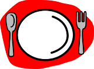
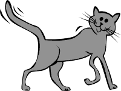

{kind=link}
{kind=link}
Ezeknél a programoknál mindig van valami, ami egyedivé teszi azt a többi feladathoz képest. Az egyedivé tevő funkcionalitás (pl. telefonkönyv esetén vCard export/import, étterem esetén alaprajz stb.) nem hagyható el a programból.
Telefonkönyv *
Készíts menüvezérelt C programot, amely „rekordokban” tárolja bizonyos személyek nevét, foglalkozását, címét, esetleg más jellemző adatait. A program legyen alkalmas:
- új rekordok létrehozására, a régiek módosítására, törlésére,
- név, telefonszám, egyéb mezők szerinti keresésre,
- név esetén egy darab *-ot tartalmazó helyettesítés (wildcard) kezelésére (pl. a "Nagy*", "N*án", "*István" keresősztringek mindegyike megtalálja Nagy Istvánt a telefonkönyvben),
- az adatbázis fájlba mentésére,
- egy bejegyzés vCard formátumba történő exportálásra, vCard fájl beolvasásra (azokat a mezőtípusokat, amiket a programod ismer).
Teszteld a vCard fájl írását, beolvasását a telefonodról mentett, továbbá a programodból generált, a telefonodra elküldött fájllal!
Határidőnapló *
Készíts határidőnapló programot, amely „rekordokban” tárolja az események dátumát, pontos idejét, helyét, elnevezését, és egy hozzá kapcsolódó megjegyezést. A program legyen képes:
- új rekodok létrehozására,
- a régiek módosítására,
- a régiek törlésére,
- egy adott naphoz, héthez és hónaphoz tartozó események naptárszerű (időrendes) kilistázására,
- esemény név szerinti keresésére,
- az adatbázis fájlba mentésére, visszatöltésére.
Étterem *
Készíts programot, amely egy étteremben az egyes asztalokhoz tartozó megrendeléseket jegyzi meg. Legyen lehetőség:
- Az asztalok megadására: hány fős, hol helyezkedik el az éttermen belül.
- Az étterem menüjének rögzítésére.
- Új asztal nyitására vendégek érkezése esetén.
- Rendelések felvételére a menü alapján.
- Számla „nyomtatására” (képernyőre).
- Foglaltsági térkép megjelenítésére, figyelembe véve az asztalok elhelyezkedését (grafikus vagy egyszerű konzolos felületen).
Az adatokat mentse a program fájlba is, hiszen azokat nem felejtheti el egy újraindítás miatt!
Oktatók hallgatói véleményezése *
Készíts programot, amely OHV kérdőíveket és azokra adott válaszokat tárol! A kérdőívek tetszőlegesen sok kérdést tartalmazhatnak, amelyekre tetszőlegesen sok válasz lehet. Ezen felül tartalmaznak egy szöveges mezőt, ahova a kitöltő bármit írhat.
Készítsen a program statisztikát a kitöltött kérdőívek alapján! Legyen képes a kérdőívek és az eredmények fájlba mentésére, illetve visszatöltésére!
Prog1 nyilvántartás *
Készíts programot, amely képes hallgatók adatait nyilvántartani, és Prog1 eredményeiket számolni! A megjegyzendő adatok a következők:
- A hallgatók neve, neptun kódja, előadás- és gyakcsoportja.
- Az oktatóik neve, csoportjaik.
- Hiányzások, kis ZH eredmények, NZH pontok stb.
„Tanítsd meg” a programnak a tárgykövetelményeket! Legyen képes a program listát készíteni azokról, akiknek PZH-t kell írniuk vagy nagy házi pótlást kell leadniuk! Legyen képes rangsorokat készíteni (pontszámok alapján), és ehhez hasonló listákat kiírni a képernyőre!
Feladatbank *
Készíts programot, amely egy oktató számára nyilván tudja tartani a ZH feladatok adatbázisát! Egy feladatról a következő adatokat kell tudnia a programnak:
- a feladat szövege,
- mintamegoldás és pontozási útmutató,
- fő téma (pl. pointerek, fájlkezelés, ...)
- megcélzott számonkérés (kis zh, nagy zh, ...)
- utolsó kiadás dátuma.
Ezeket természetesen módosítani kell tudni, pl. az utolsó kiadás dátumát, ha egy feladat bekerül a ZH-ba, vagy a pontozási útmutatót, ha kiderül róla, hogy nem egyértelmű.
Legyen képes a program témák, számonkérések szerint keresni, és utolsó kiadás dátuma szerint rendezni is!
Könyvtár *

Készíts programot, amely képes egy könytár adatait eltárolni. A program legyen képes:
- új könyvek létrehozására, a régiek módosítására, törlésére,
- a könyvek szerző, cím, kiadási év, téma alapján való keresésére.
Legyen képes ezen felül:
- Olvasók adatainak kezelésére,
- a kölcsönzés adatainak kezelésére (melyik könyv épp kinél van),
- megmondani egy adott könyvről, hogy az ki van-e kölcsönözve, és ha igen, kinél,
- kilistázni egy adott olvasónál lévő könyveket.
Mentsd az összes adatot fájlba, hogy újraindítás esetén se vesszenek el az adatok!
Többnyelvű szótár **
Készíts többnyelvű szótár programot. A program adjon lehetőséget:
- a szótárfájl kiválasztására,
- új szótárfájl létrehozására,
- a szótárfájl bővítésére és a bejegyzések javítására,
- több, akár tetszőleges számú nyelv kezelésére.
(Figyelem: a kétnyelvű szótár az előadás példája. Annál itt összetettebb programot kell készíteni.)
Szociális háló *
Írj programot, amely emberek személyes adatait (név, nem, születési dátum stb.), továbbá ismeretségi viszonyait (kik ismerik egymást) képes nyilvántartani, és lehetővé teszi azt, hogy két ismerős üzenni tudjon egymásnak!
A programnak nem kell grafikusnak, se hálózatosnak lennie. Elég, ha egyszerre egy ember tudja használni: utána ő kijelentkezik, és valaki más bejelentkezik. Tegyen lehetővé ugyanakkor kereséseket (név szerint, iskola szerint, lakóhely szerint stb.), és ajánlja fel egy menüpontban a felhasználók számára az ismerősök ismerőseit! Tároljon el minden adatot fájlban (az üzeneteket is), és tegye lehetővé akárhány felhasználó és üzenet létezését!
Repülőjegyek *
Készíts menüvezérelt C programot, amellyel repülőjegyek foglalásait tudod nyilvántartani! Legyen lehetőség a programban a járatok adatait megadni. Ezen felül legyen lehetőség külön menüpontban elvégezni olyan műveleteket, amelyeket általában internetes repülőjegy-vásárlásnál is lehet:
- Járatokat keresni.
- Adott névre repülőjegyet foglalni.
- Egy megkeresett foglaláshoz ülőhelyet rendelni.
- Egy megkeresett foglaláshoz menüt (normál, vega, laktózmentes stb.) választani.
Legyen képes a program:
- Kezelni az ülőhelyek számát, nehogy túlfoglalás legyen
- Ne engedje két utasnak ugyanazt az ülőhelyet kiadni
- Az ülőhelyekről foglaltsági térképet megjeleníteni (választás szerint konzolos vagy grafikus felületen)
- Összesíteni, hogy melyik járatra, melyik menüből hány adagot kell felvinni.
Autószerviz *
A feladat egy olyan programot készíteni, amellyel egy autószerviz tarthatja nyilván az ügyfelei adatait, és az autóikon elvégzett javításokat. A program legyen képes:
- Megjegyezni az ügyfelek (név, elérhetőség) és az autók adatait (rendszám, típus, vizsga érvényessége stb.)
- Az autókhoz pedig tételesen feljegyezni az elvégzett javításokat.
- Mindezeket fájlban tárolni.
A programban lehessen:
- Új autó adatait rögzíteni (új autót vett), meglévő autót törölni (eladta)
- Ügyfél és rendszám szerint keresni.
- Elvégzett javítást (pl. olajcsere, vizsga stb.) dátum szerint feljegyezni, a javítás árát rögzíteni.
- Szerviztörténetet megjeleníteni.
- Listázni az autókat, amelyeknek hamarosan lejár a vizsgájuk.
Receptes könyv *
A programodnak egy receptgyűjteményt kell tárolnia:
- Ehhez ismernie kell a felhasználható összetevőket (pl. liszt, paradicsom, ...)
- Meg kell jegyezni az elkészíthető ételeket, amelyekhez tartozóan meg kell jegyeznie az étel nevét, a hozzávalókat (mennyiségekkel), és az elkészítés módját.
- Lehessen új receptet rögzíteni, közben a hozzávalókat az összetevők listájából kiválasztva, vagy újat rögzítve.
- És persze legyen lehetőség régi, megunt receptet törölni.
Lehessen a programban többféleképpen keresni a receptek között:
- Az étel nevét megadva.
- „Nincs ötletem” funkció: véletlenszerűen sorsol a program ételeket, és ha a felhasználó elfogadja valamelyiket, akkor megjeleníti annak a receptjét.
- „De ennék egy kis...” funkció: a felhasználó megad egy összetevőt, és a program azokat az ételeket listázza, amelyek azt tartalmazzák. Ezután kiválasztható valamelyik, és a program megjeleníti a részleteket.
- „El kell használni” funkció: a felhasználó megad egy vagy több összetevőt, és a program olyan recepteket listáz, amelyekben az összes megadott összetevő szerepel.
Állatorvos *
Egy állatorvosi rendelő működését segítő programot kell írnod. Ennek meg kell jegyeznie:
- A tulajdonosok adatait, elérhetőségét.
- Az állatok adatait (név, milyen állat, mikor kapott utoljára veszettség elleni oltást stb.) Egy tulajdonosnak több állata is lehet.
- Az állatokon elvégzett vizsgálatok, kezelések adatait, azok dátumait.
- Értelemszerűen ezeknek módosíthatóknak kell lenniük, pl. új vizsgálat adatainak rögzítése, vagy tulajdonos és hozzá tartozó állatok törlésére (ha elköltözött).
Legyen lehetőség többféleképpen keresni az adatok között:
- Tulajdonost megkeresni, elérhetőségi adatait megtudni.
- Adott tulajdonos állatait listázni.
- Állatot név szerint keresni (vigyázat: több ugyanolyan nevű lehet, több tulajdonostól!
- Tulajdonos szerint válogatva listázni azokat az állatokat, amelyek egy évnél régebben kaptak veszettség elleni oltást. Így értesíteni lehet majd őket.
A megtalált adatokat lehessen módosítani a keresés után!